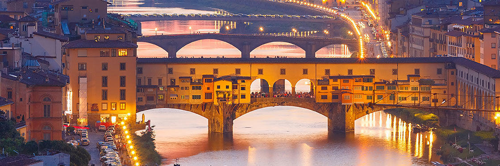

Seguici sui Social:

| Piazza della Signoria | Santa Maria del Fiore | Ponte Vecchio |
Piazza della Signoria è la piazza centrale di Firenze, sede del potere civile e cuore della vita sociale della città. A forma di L, si trova nella parte centrale della Firenze medievale, a sud della Cattedrale di Santa Maria del Fiore. In passato ha assunto diversi nomi, come piazza dei Priori o piazza del Granduca.Situata nel centro storico, piazza della Signoria è sempre stata il centro politico e della vita civile di Firenze. Piazza della Signoria è raggiungibile a piedi in 10 minuti dalla stazione ferroviaria di Santa Maria Novella ed è annessa agli Uffizi, Palazzo Vecchio e Ponte Vecchio. Dopo varie trasformazioni ed a seguito della realizzazione degli Uffizi (1560 - 1580) la Piazza della Signoria assunse l'attuale aspetto; un grande impatto visuale correlato da varie sculture e palazzi. Al centro della piazza è collocato il monumento equestre di Cosimo I (opera in bronzo del Giambologna del 1598) e la Fonte di Piazza o Fontana del Nettuno di Bartolomeo Ammannati e Giambologna del 1575 eretta accanto a Palazzo Vecchio in occasione della costruzione di un nuovo acquedotto.
La cattedrale metropolitana di Santa Maria del Fiore, conosciuta comunemente come duomo di Firenze, è la principale chiesa fiorentina, simbolo della città ed uno dei più famosi d'Italia; quando fu completata, nel Quattrocento, era la più grande chiesa al mondo, mentre oggi è ritenuta la terza in Europa dopo San Pietro a Roma e il Duomo di Milano[1]. Essa sorge sulle fondamenta dell'antica cattedrale di Firenze, la chiesa di Santa Reparata, in un punto della città che ha ospitato edifici di culto sin dall'epoca romana. La costruzione del Duomo, ordinata dalla Signoria fiorentina, inizia nel 1296 e termina dal punto di vista strutturale soltanto nel 1436. I lavori iniziali furono affidati all'architetto Arnolfo di Cambio per poi essere interrotti e ripresi numerose volte nel corso dei decenni (da Giotto, Francesco Talenti e Giovanni di Lapo Ghini). Al completamento della cupola del Brunelleschi seguì la consacrazione da parte di papa Eugenio IV il 24 marzo del 1436. La dedica a Santa Maria del Fiore avvenne in corso d'opera, nel 1412.
Il Ponte Vecchio è uno dei simboli della città di Firenze ed uno dei ponti più famosi del mondo. Attraversa il fiume Arno circa 150 metri a valle dell'area in cui il fiume presenta naturalmente uno dei punti in cui l'alveo è più stretto all'interno della città di Firenze nel suo tratto a monte delle Cascine. L'area in questione è ai Canottieri sotto gli Uffizi. Nell'antichità esisteva un guado.Ponte Vecchio è uno dei ponti più vecchi di Firenze, forse anche il più vecchio. All'origine era circondato da quattro torri e comprendeva tre campate a tutto sesto. È stato poi ricostruito da Taddeo Gaddi in seguito ad un'alluvione che ha causato la sua distruzione. Dopo la ricostruzione il ponte divenne a sesto ribassato. Al giorno d'oggi è molto famoso e meta di numerosi turisti.
Seguici sui Social: